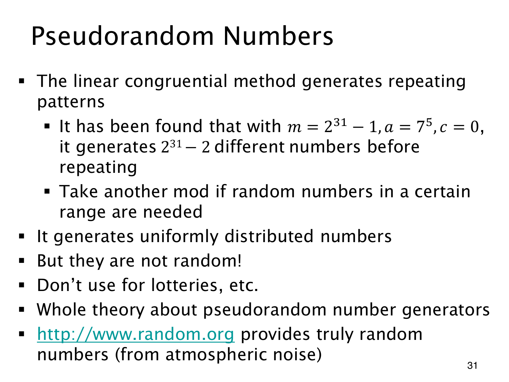

L1.12 · 第 31 页讲解原文
查看这一页课件

长周期不保证不可预测
课件给出 m=231−1,a=75,c=0，称重复前可经过 231−2 个不同状态。这需要非零种子；若 x0=0，递推会一直停在 0。
完整周期内每个非零状态出现一次，可以说明这里的分布，却不能说明相邻输出独立，更不能说明观察若干项后无法预测。它们仍由同一个确定性公式计算。
取余已经用于压缩状态、组织查找、检测某些错误，也能生成这样的周期数列。若要缩小输出范围，还可以再次取模，例如模 6 得到 0 至 5。但原范围大小不是 6 的倍数时，各余数对应的原值数量可能不同，产生 modulo bias（取模偏差）。范围正确并不自动带来严格均匀。
所以不能仅凭周期长、范围合适，就将这种简单生成器用于要求不可预测的抽签或安全场景。页末以大气噪声为来源的网站，是拿物理噪声与确定性递推作对照的课件例子，课程网站并不依靠它联网运行。